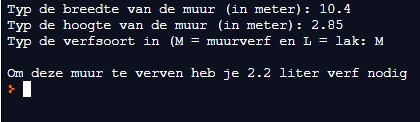
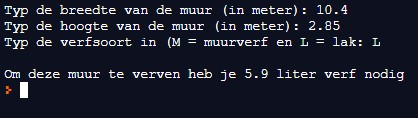
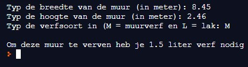

Maak een programma dat het aantal liter verf berekent nodig om een schilderwerk te kunnen uitvoeren. Het programma kan gebruikt worden voor muurverf en lak.
Elk soort verf heeft een andere dekkingsgraad:
Rond het aantal liter verf dat je nodig hebt af tot 1 cijfer na de komma. Gebruik hiervoor de functie round(getal,x).
Hieronder vind je de schermafdruk van een uitvoering van het programma:


